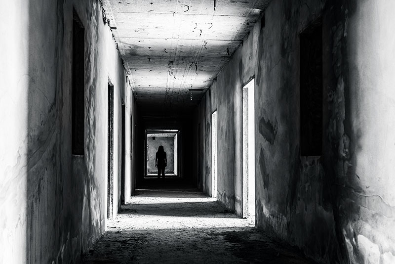

Home
Tools
Shows
Types
Media
Ghost
World
Ghost hunting is something that has been around since the 1950's.
Paranormal investigating is a field in which you find the unknown.
Many individuals have experiances in which they can't explain and Ghost Hunters help solve them.
